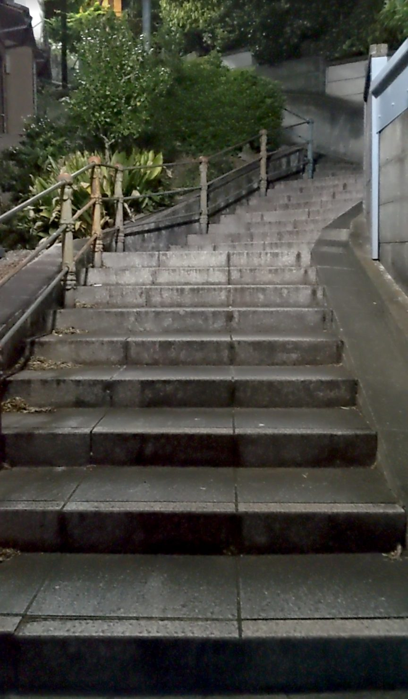
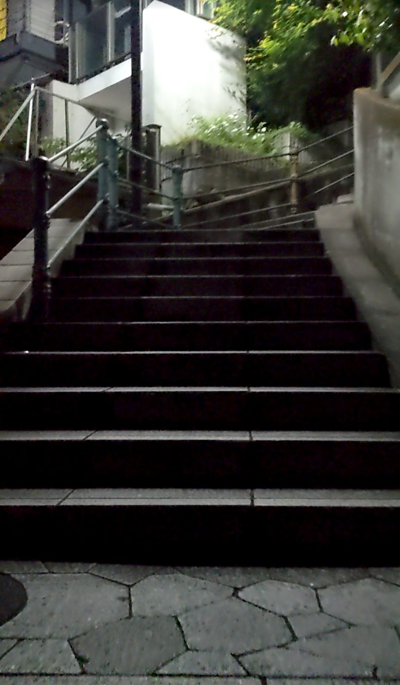
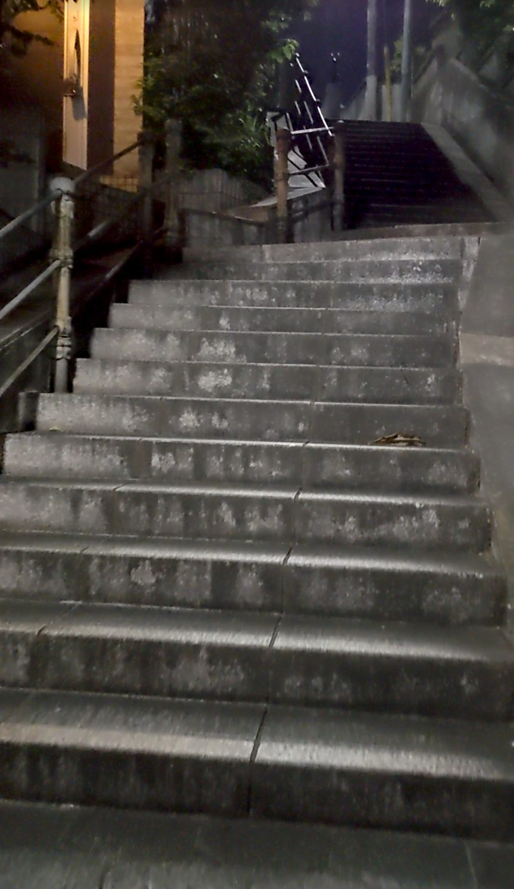
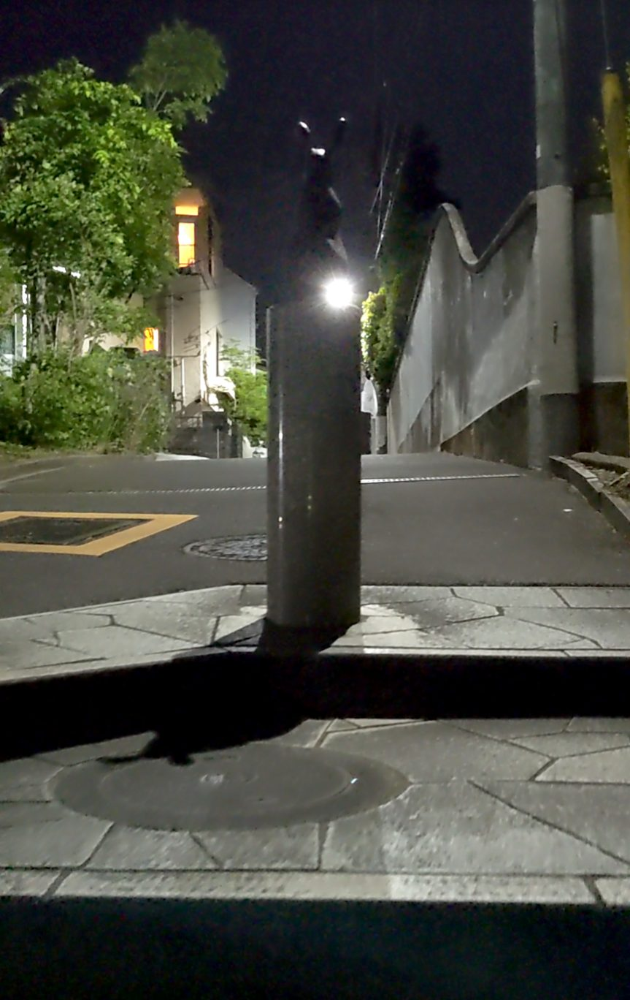
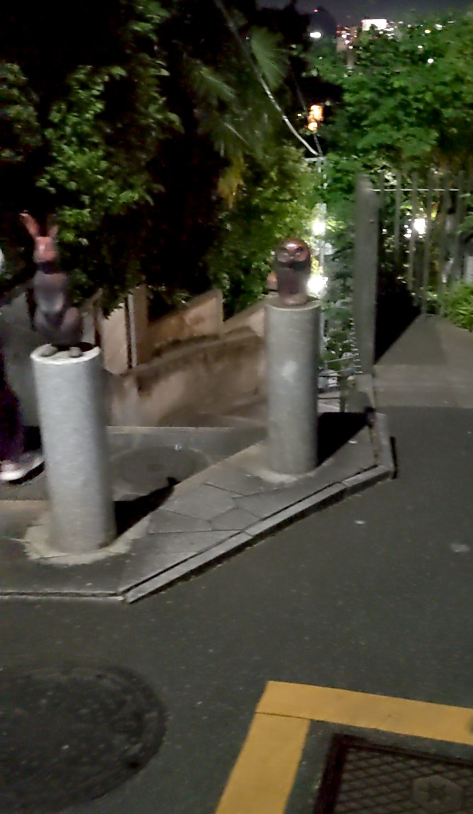

東京都新宿区下落合にある薬王院そばの階段は、住宅街にひっそりと存在する71段の石段です。西武新宿線の下落合駅から徒歩約10分ですが、場所がわかりづらいため、階段・石段スポット基本情報で場所をよく確認してから向かうことをおすすめします。下落合や高田馬場といった低地から北へ上がっていくような地形に沿った石段で、近くに寺院があるからか、重厚な石造りが印象的です。
西武新宿線「下落合駅」下車、徒歩約10分。住宅街の中にあり場所がわかりづらいため、階段・石段スポット基本情報の地図を参考にして向かってください。
夜間は街灯が少なく足元が暗くなります。昼間の訪問をおすすめしますが、夜間に訪れる場合は懐中電灯などを持参してください。石段は年季が入っていてグリップが効きにくい箇所もあるため、歩きやすい靴で訪れましょう。
住宅街の細い路地を地図を頼りに歩いていくと、ふいに石段が現れます。案内板もなく、知らなければ通り過ぎてしまいそうな場所です。近くに薬王院という寺院があるためか、石段の造りはしっかりとした重厚な石造りで、手すりにも長い年月を感じさせる風格があります。

今回は夜間に訪れました。意図していたわけではないのですが、結果的に夜の石段を撮影することになりました。昼間であれば静かな住宅街の石段として穏やかな印象のはずですが、夜は話が別です。街灯の光が届きにくく、石段の先が暗く沈んでいて、正直なところ少し怖かったです。

石段のすぐ横には民家が建っています。塀や窓がすぐそこにある距離感で、生活の場に階段が完全に溶け込んでいることがよくわかります。地元の住民にとっては日常的な通路なのでしょう。訪れるときは、近隣への配慮を忘れずに。

71段を登り切ると、そこに待っていたのはウサギとフクロウのモニュメントでした。重厚な石段と年季の入った雰囲気から続く、少々意外なお出迎えです。2つが並んでいる様子は、どこかほっとさせてくれる可愛らしさがありました。


場所のわかりにくさも含めて、「探して、見つけて、登る」という体験が楽しめる石段です。できれば昼間に、ぜひ地図を片手に探しに来てみてください。